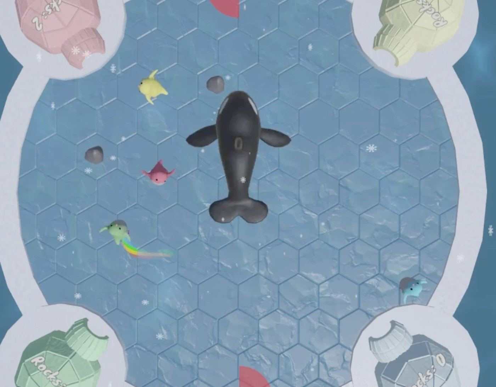
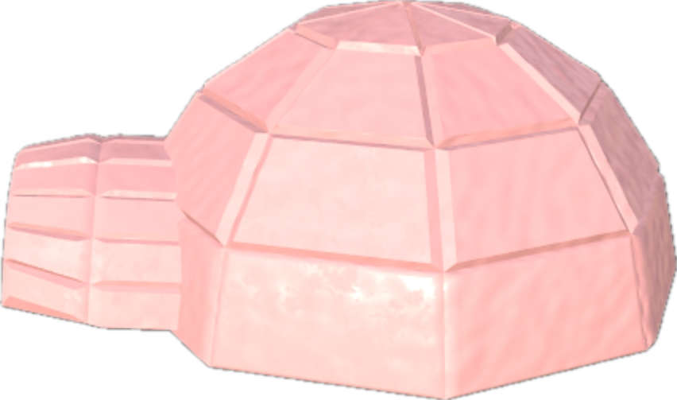
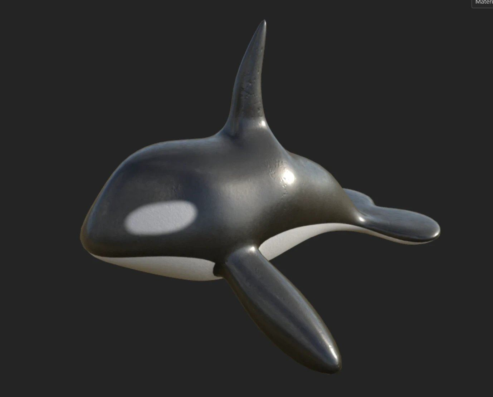
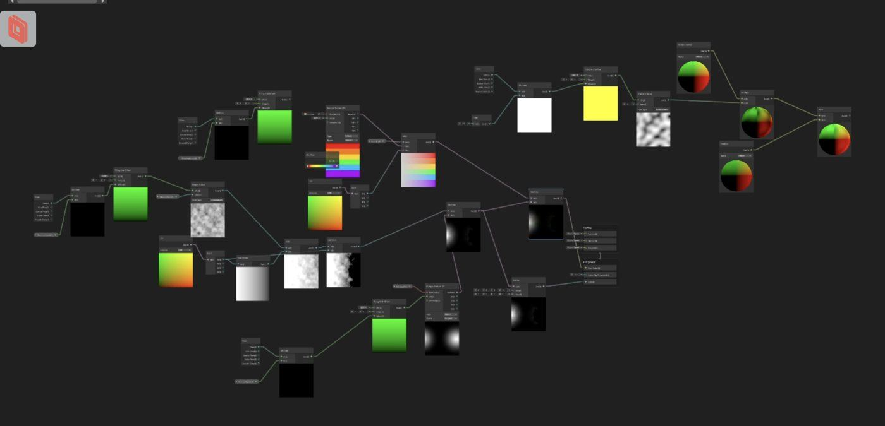
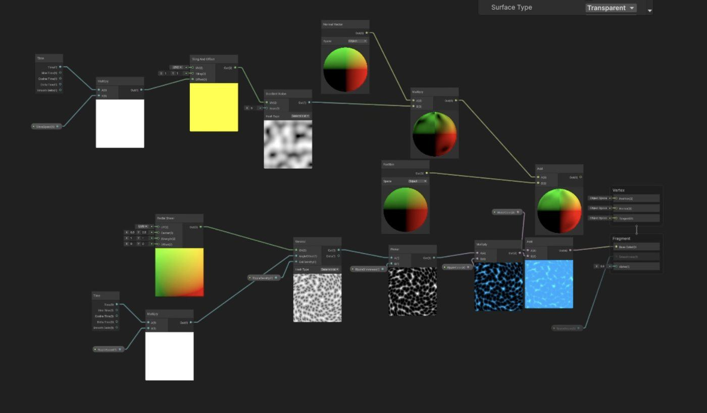

Kungfu Penguin
A 4-player penguin brawl on a round table screen.
Playtesting on the Jam-O-Drum, a round table screen for four players.

The game
Four players control penguins racing to collect a limited number of stones to build their homes. You can kick other penguins to get ahead, while dodging falling ice and killer whales. It is fast, loud and chaotic.
My role
I was a 3D artist and technical artist on a 5-person team.
- Modeled the environment assets, like the igloo homes
- Modeled the killer whale
- Made the ocean and rainbow trail shaders in Shader Graph
- Made the running and snowing effects
- Kept the visuals clear and fast on the shared round screen
- Project
- ETC Building Virtual Worlds, Fall 2025
- Platform
- Jam-O-Drum, a round table screen for 4 players
- Engine
- Unity, Shader Graph
- My role
- 3D artist, technical artist
Models

Igloo home

Killer whale
Effects
Rainbow running trail

Rainbow trail shader

Ocean shader
More work: 3D & Animation, VFX, Film & Content